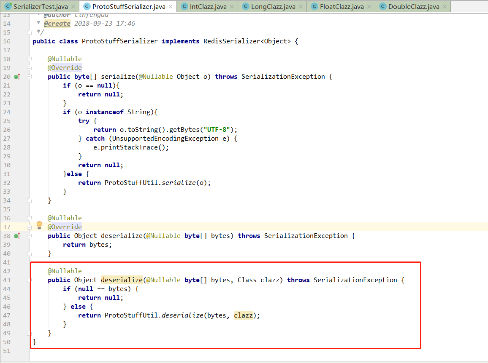
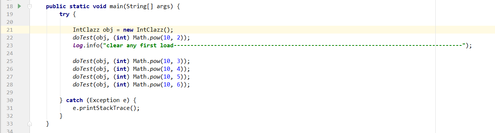

spring boot chapter3
spring boot chapter3: Performance testing between Jackson and Protobuff.
1. Jackson和Protobuff哪个更加高效？
(1)我们直接使用现有的ProtoStuffSerializer类和Jackson2JsonRedisSerializer来测试Jackson和Protobuff的序列化效率，这2个类并没有做任何多余动作，不会影响测试的不变条件。这里ProtoStuffSerializer类需要额外扩展一个反序列化方法。

(2)序列化测试的4种类型如下。
/**
* 描述: 测试int类型
*
* @author linfengda
* @create 2018-10-04 12:30
*/
@Data
public class IntClazz {
private int target;
public IntClazz() {
this.target = 123456789;
}
}
......
/**
* 描述: 测试long类型
*
* @author linfengda
* @create 2018-10-04 12:31
*/
@Data
public class LongClazz {
private long target;
public LongClazz() {
this.target = 123456789l;
}
}
......
/**
* 描述: 测试float类型
*
* @author linfengda
* @create 2018-10-04 12:30
*/
@Data
public class FloatClazz {
private float target;
public FloatClazz() {
this.target = 123456789.123456789f;
}
}
......
/**
* 描述: 测试double类型
*
* @author linfengda
* @create 2018-10-04 12:29
*/
@Data
public class DoubleClazz {
private double target;
public DoubleClazz() {
this.target = 123456789.123456789;
}
}
(3)序列化测试场景为：一定数量的拥有相同字段类型的相同实例，使用不同方式序列化的耗时。

(4)反序列化测试场景为：一定数量的拥有相同字段类型的相同实例，使用不同方式反序列化的耗时。

(5)对于一种测试类型，我们的不变性条件为实例类型+测试次数，唯一变量为序列化方式，其中测试入口如下：
(6)一次测试的序列化次数为10^3,10^4,10^5,10^6：

(7)我们分别测试了整形/长整形/单精度浮点型/双精度浮点型的序列化和反序列化耗时，并将测试结果整理成下图的echart柱状图。其中图表的横坐标为序列化次数（10^n次），纵坐标为Protobuff或Jackson的序列化耗时。